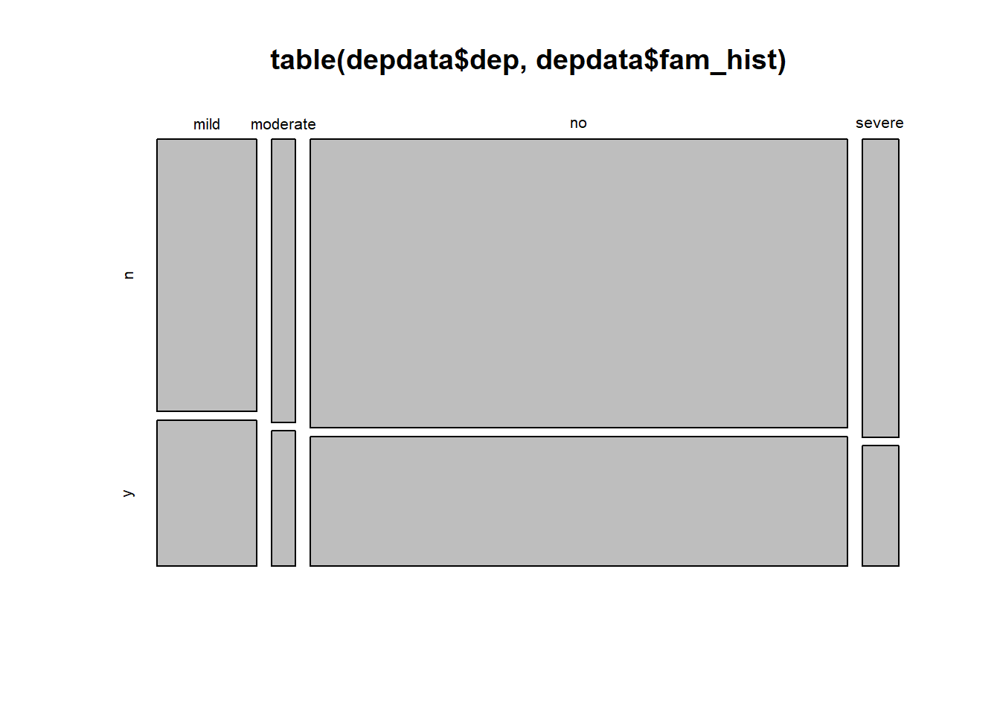

What are the basic hypothesis tests that we can conduct when we are interested in variables that have categories instead of numbers?
Here we continue with our brief explainers of different basic statistical tests. The past few weeks have focused on tests for numeric outcome variables, where we have been concerned with the mean of that variable (e.g. whether that mean is different from some specific value, or whether it is different between two groups). We now turn to investigate tests for categorical outcome variables.
The test-statistics for these tests (denoted \(\chi^2\), spelled chi-square, pronounced “kai-square”) are obtained by adding up the standardized squared deviations in each cell of a table of frequencies:
The \(\chi^2\) Goodness of Fit Test is typically used to investigate whether observed sample proportions are consistent with an hypothesis about the proportional breakdown of the various categories in the population.
Examples:
Do 20% of the adult population suffer from some form of depression?
Are people equally likely to be born on any of the seven days of the week?
Are 2/3 of people ‘dog people’ and 1/3 of people ‘cat people’?
Assumptions
Data should be randomly sampled from the population.
Data should be at the categorical or nominal level - goodness-of-fit test is not appropriate for continuous level data.
Expected counts should be at least 5.
Example
Research Question: Have proportions of adults suffering no/mild/moderate/severe depression changed from 2019?
In 2019, it was reported that 80% of adults (18+) experienced no symptoms of depression, 12% experienced mild symptoms, 4% experienced moderate symptoms, and 4% experienced severe symptoms.
The dataset is accessible at https://uoepsy.github.io/data/usmr_chisqdep.csv contains data from 1000 people to whom the PHQ-9 depression scale was administered in 2022.
# A tibble: 6 × 3
id dep fam_hist
<chr> <chr> <chr>
1 ID1 severe n
2 ID2 mild n
3 ID3 no n
4 ID4 no n
5 ID5 no n
6 ID6 no n
We can see our table of observed counts with the table() function:
table(depdata$dep)
mild moderate no severe
143 34 771 52
The quick and easy way
We can perform the \(\chi^2\) test very easily, by simply passing the table to the chisq.test() function, and passing it the hypothesised proportions. If we don’t give it any, it will assume they are equal.
Note: the proportions must be in the correct order as the entries in the table!
This will give us the test statistic, degrees of freedom, and the p-value:
# note the order of the table is mild, moderate, no, severe. # so we put the proportions in that orderchisq.test(table(depdata$dep), p =c(.12, .04, .8, .04))
Chi-squared test for given probabilities
data: table(depdata$dep)
X-squared = 9.9596, df = 3, p-value = 0.01891
If the distribution of no/mild/moderate/severe depression were as suggested (80%/12%/4%/4%), then the probability that we would obtain a test statistic this large (or larger) by random chance alone is .019. With an \(\alpha = 0.05\), we reject the null hypothesis that the proportion of people suffering from different levels of depression are the same as those indicated previously in 2019.
\(\chi^2\) goodness of fit test indicated that the observed proportions of people suffering from no/mild/moderate/severe depression were significantly different (\(\chi^2(3)=9.96, p = .019\)) from those expected under the distribution suggested from a 2019 study (80%/12%/4%/4%).
We can examine where the biggest deviations from the hypothesised distribution are by examining the ‘residuals’:
chisq.test(table(depdata$dep), p =c(.12, .04, .8, .04))$residuals
mild moderate no severe
2.0996031 -0.9486833 -1.0253048 1.8973666
This matches with what we see when we look at the table of counts. With \(n=1000\), under our 2019 distribution, we would expect 800 to have no depression, 120 mild, 40 moderate, and 40 severe.
table(depdata$dep)
mild moderate no severe
143 34 771 52
The difference in the moderate “observed - expected” is 6, and the difference in the “no depression” is 29. But these are not comparable, because really the 6 is a much bigger amount of the expected for that category than 29 is for the no depression category. The residuals are a way of standardising these.
They are calculated as: \[
\text{residual} = \frac{\text{observed} - \text{expected}}{\sqrt{expected}}
\]
Manually
First we calculate the observed counts:
depdata %>%count(dep)
# A tibble: 4 × 2
dep n
<chr> <int>
1 mild 143
2 moderate 34
3 no 771
4 severe 52
# A tibble: 4 × 3
dep n expected
<chr> <int> <dbl>
1 mild 143 120
2 moderate 34 40
3 no 771 800
4 severe 52 40
How do we measure how far the observed counts are from the expected counts under the null? If we simply subtracted the expected counts from the observed counts and then add them up, you will get 0. Instead, we will square the differences between the observed and expected counts, and then add them up.
One issue, however, remains to be solved. A squared difference between observed and expected counts of 100 has a different weight in these two scenarios:
Scenario 1:\(O = 30\) and \(E = 20\) leads to a squared difference \((O - E)^2 = 10^2 = 100\). Scenario 2:\(O = 3000\) and \(E = 2990\) leads to a squared difference \((O - E)^2 = 10^2 = 100\)
However, it is clear that a squared difference of 100 in Scenario 1 is much more substantial than a squared difference of 100 in Scenario 2. It is for this reason that we divide the squared differences by the the expected counts to “standardize” the squared deviation.
The p-value for a \(\chi^2\) Goodness of Fit Test is computed using a \(\chi^2\) distribution with \(df = \text{nr categories} - 1\).
We calculate our p-value by using pchisq() and we have 4 levels of depression, so \(df = 4-1 = 3\).
pchisq(9.959583, df=3, lower.tail=FALSE)
[1] 0.01891284
\(\chi^2\) Test of Independence
Purpose
The \(\chi^2\) Test of Independence is used to determine whether or not there is a significant association between two categorical variables. To examine the independence of two categorical variables, we have a contingency table:
Family History of Depression
Depression Severity n y
mild 93 50
moderate 23 11
no 532 239
severe 37 15
Examples:
Is depression severity associated with having a family history of depression?
Are people with blue eyes more likely to be over 6 foot tall?
Are people who carry the APOE-4 gene more likely to have mild cognitive impairment?
Assumptions
Two or more categories (groups) for each variable.
Independence of observations
there is no relationship between the subjects in each group
Large enough sample size, such that:
expected frequencies for each cell are at least 1
expected frequencies should be at least 5 for the majority (80%) of cells
Example
Research Question: Is severity of depression associated with having a family history of depression?
The dataset accessible at https://uoepsy.github.io/data/usmr_chisqdep.csv contains data from 1000 people to whom the PHQ-9 depression scale was administered in 2022, and for which respondents were asked a brief family history questionnaire to establish whether they had a family history of depression.
# A tibble: 6 × 3
id dep fam_hist
<chr> <chr> <chr>
1 ID1 severe n
2 ID2 mild n
3 ID3 no n
4 ID4 no n
5 ID5 no n
6 ID6 no n
We can create our contingency table:
table(depdata$dep, depdata$fam_hist)
n y
mild 93 50
moderate 23 11
no 532 239
severe 37 15
And even create a quick and dirty visualisation of this too:
plot(table(depdata$dep, depdata$fam_hist))

The quick and easy way
Again, we can perform this test very easily by passing the table to the chisq.test() function. We don’t need to give it any hypothesised proportions here - it will work them out based on the null hypothesis that the two variables are independent.
If there was no association between depression severity and having a family history of depression, then the probability that we would obtain a test statistic this large (or larger) by random chance alone is 0.79. With an \(\alpha=.05\), we fail to reject the null hypothesis that there is no association between depression severity and family history of depression.
A \(\chi^2\) test of independence indicated no significant association between severity and family history (\(\chi^2(3)=1.07, p=.785\)), suggesting that a participants’ severity of depression was not dependent on whether or not they had a family history of depression.
n y
mild 93 50
moderate 23 11
no 532 239
severe 37 15
Manually
We have our observed table:
table(depdata$dep, depdata$fam_hist)
n y
mild 93 50
moderate 23 11
no 532 239
severe 37 15
To work out our expected counts, we have to do something a bit tricky. Let’s look at the variables independently:
table(depdata$fam_hist)
n y
685 315
table(depdata$dep)
mild moderate no severe
143 34 771 52
With \(\frac{315}{315+685} = 0.315\) of the sample having a family history, then if depression severity is independent of family history, we would expect that 0.315 of each severity group to have a family history of depression. For example, for the mild depression, with 143 people, we would expect \(143 \times 0.315 = 45.045\) people in that group to have a family history of depression.
For a given cell of the table we can calculate the expected count as \(\text{row total} \times \frac{\text{column total}}{\text{samplesize}}\).
Or, quickly in R:
n y
mild 97.955 45.045
moderate 23.290 10.710
no 528.135 242.865
severe 35.620 16.380
Now that we have our table of observed counts, and our table of expected counts, we can actually fit these into our formula to calculate the test statistic:
sum ( (obs - exp)^2/ exp )
[1] 1.066686
The p-value is computed using a \(\chi^2\) distribution with \(df = (\text{nr rows} - 1) \times (\text{nr columns} - 1)\).
Why is this? Well, remember that the degrees of freedom is the number of values that are free to vary as we estimate parameters. In a table such as the one below, where we have 4 rows and 2 columns, the degrees of freedom is the number of cells in the table that can vary before we can simply calculate the values of the other cells (where we’re constrained by the need to sum to our row/column totals).
We have 4 rows, and 2 columns, so \(df = (4-1) \times (2-1) = 3\).